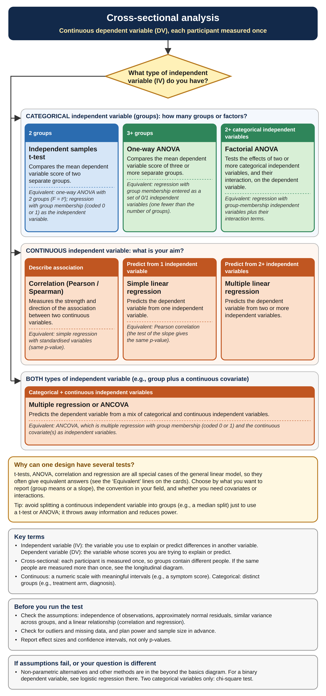
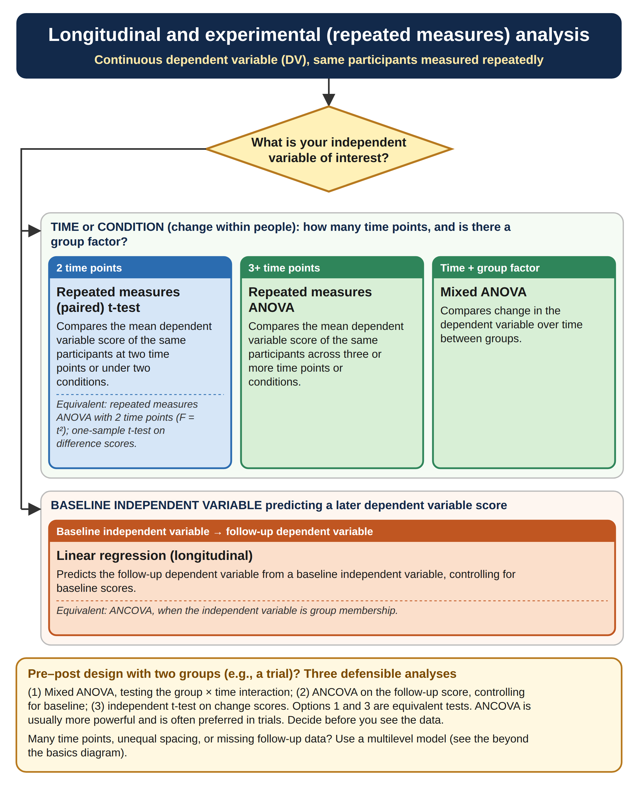
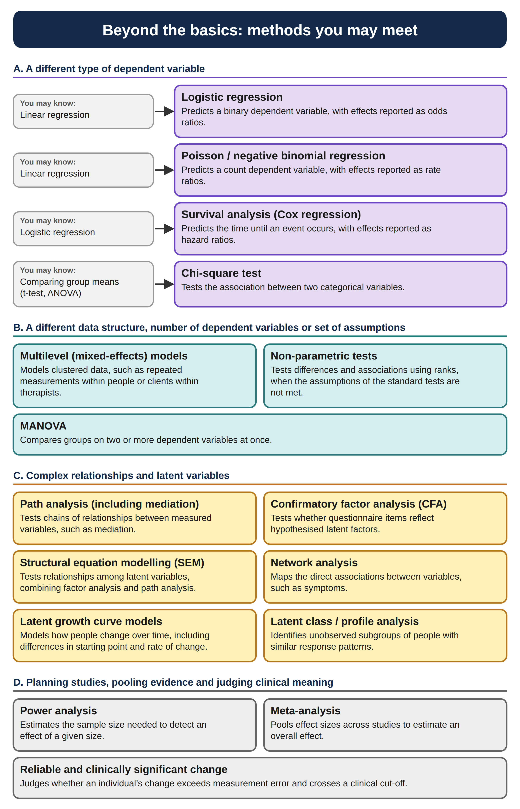

Let’s review which statistical test matches which design. Have a read of each diagram explaining which statistical test matches what kind of research design and then have a go at the quizzes.
3.1 Cross-sectional

Figure 3.1: Flow diagram for cross-sectional tests
3.2 Longitudinal

Figure 3.2: Flow diagram for longitudinal tests
3.3 Beyond the basics

Figure 3.3: Flow diagram for extra statistical tests